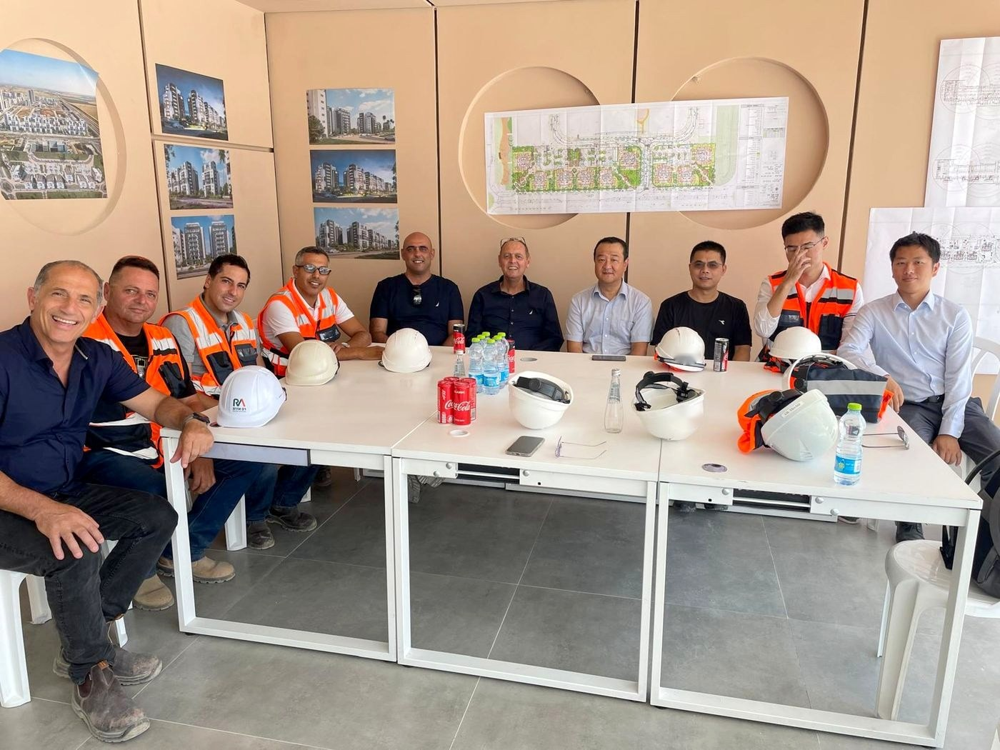

Israel offers a unique business environment combining innovation, a strategic location, and a robust legal framework.
Our comprehensive guide covers everything from company formation to regulatory compliance, helping international businesses navigate the Israeli market successfully.
We provide ongoing support for foreign companies establishing operations in Israel, ensuring smooth integration into the local business ecosystem.
Renault, a long-standing client of the firm
Our firm is characterized by the breadth of its international activity, based upon our legal team’s full command of foreign languages and almost two decades’ worth of experience in providing local and multinational corporations with legal services.
We provide our clients with comprehensive and ongoing service in a one-stop-shop manner, so that every client receives top-notch bespoke legal services of the highest quality.
Our firm guides Israeli clients in their various activities overseas, enabled by our keen business understanding and excellent English and Spanish communication skills. In turn, this has resulted in significant international transactional experience.
We advise both corporations and private individuals, Israeli and foreign alike, and provide each with sophisticated legal services across all levels of their activities. Our client base includes leading international companies and business groups operating in Israel and abroad, particularly in the fields of energy, infrastructure, complex real-estate projects, commercial litigation, and employment law. In addition, the firm has extensive experience in immigration and cross-border matters, delivering comprehensive legal support that combines regulatory insight, commercial understanding, and a global perspective.
Get in TouchDardik Gross is a law firm where people of different nationalities, genders, sexual orientations and backgrounds work together to deliver high-quality legal services to our clients.
We believe that the strength of a team lies in the diversity of its people and their unity in achieving a common goal – and that only this way can our people bring innovation, be creative and give their best performance.
Dardik Gross strives to create a working environment where every individual has equal opportunities to grow and succeed, and to feel safe and appreciated.